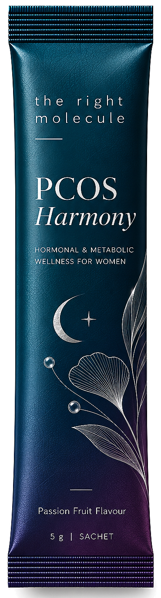
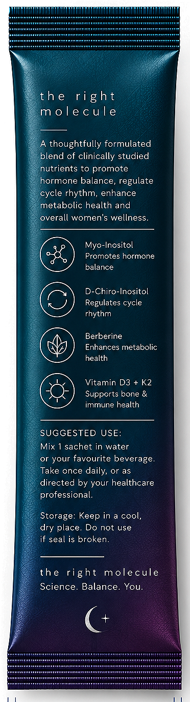

The Question That Became a Molecule
“Can you find the right supplement for my best friend with PMOS?”
When my sister asked me that question, I didn’t realise it would change the direction of my life.
The background
With a background in molecular biology, research in computational biology, and experience building a startup in the bioeconomy, I had spent years exploring how science could make a meaningful difference in people’s lives.
The search
But when I began searching for a thoughtfully formulated PMOS supplement, I found myself comparing ingredients, dosages, scientific evidence and prices, trying to piece together what I couldn’t find in one product.
Behind every concern
That search made me realise something important: behind every health concern is a real person, with their own experiences, questions and a desire to feel better.
For many women, PMOS can mean unpredictable cycles, persistent symptoms and uncertainty about what their bodies are telling them. And sometimes, the hardest part is simply knowing where to begin or whom to trust.
The question
What if understanding and supporting our biology could be simpler, more thoughtful and more accessible?
That question became the foundation of The Right Molecule, which my sister and I started together.


Our vision
We begin with PMOS and hormonal well-being through purposeful, science-led formulations.
But our vision goes beyond supplements: to build a system that connects scientific understanding with informed choices and meaningful everyday action.
- We begin withPMOS & hormonal well-being
- 01Scientific understandingWhat the research shows about your biology.
- 02Informed choicesClear options you can weigh for yourself.
- 03Everyday actionSmall, meaningful steps that fit your day.
What we believe
We believe biology is personal.
No single solution works for everyone, and better health should never be about chasing quick fixes or feeling pressured to change who you are.
Forty-eight people. No two the same.
Still at the beginning
We’re still at the beginning, guided by curiosity, scientific honesty and care
Because biology deserves a better understanding.
InnerAtlas × Plyolife · Sunday, 29 November · 6:00 PM IST